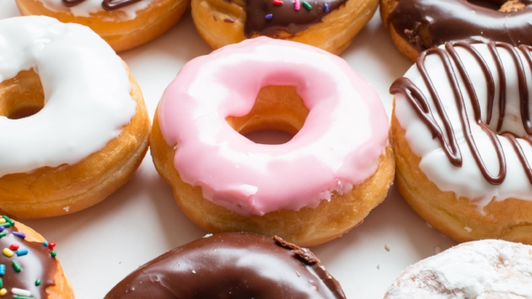
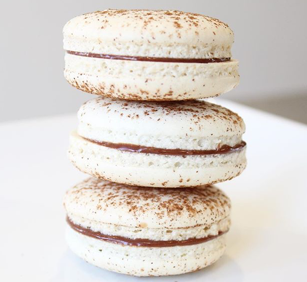
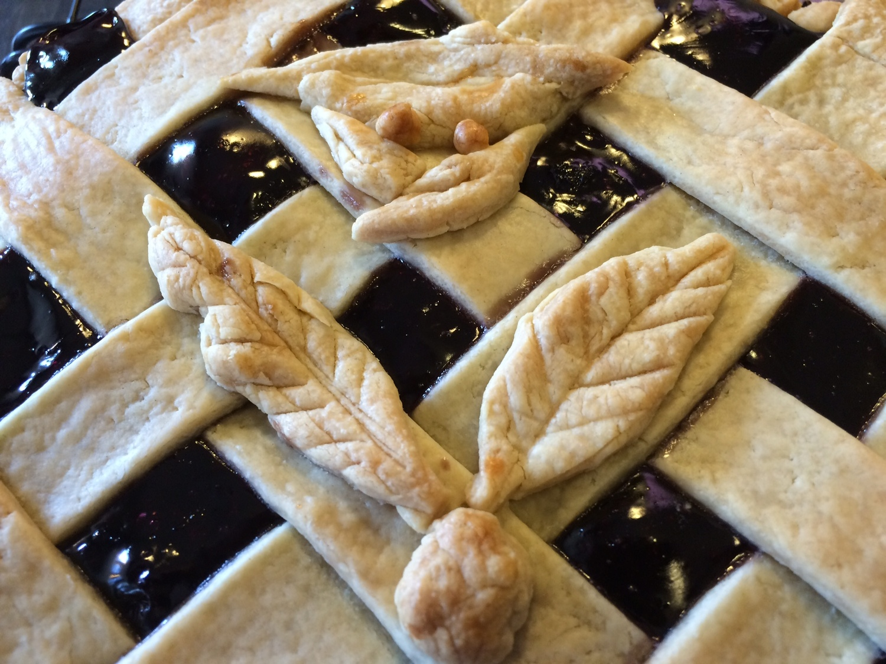
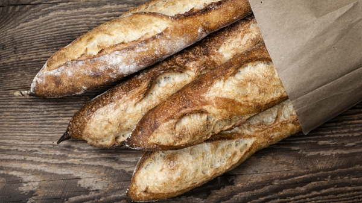
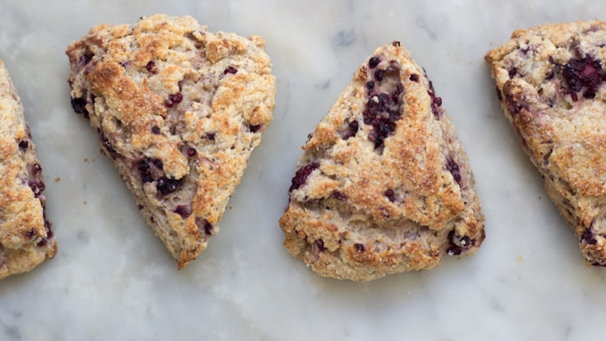

1. Donuts
What? Did someone say donuts? Come join us in making these tasty treats. A perfect way to start your Sunday morning and coffee's on us!
More Info2. French Macarons
This one sells out quickly so grab it while you can! Join us as we master this very fickle, yet delectable treat.
More Info3. Pies and Tarts
In this baking class we will start with the classic pie crust or pâte brisée. Recipes are seasonal with berries and summer fruits showing up in the warmer months, while we rely upon the autumn harvest of apples, pumpkins, and pecans in the fall and winter.
More Info4. Homemade Bread
In this more advanced class we will create traditional breads using three classic starters: Sourdough, Biga, and Poolish. These will be used to create delicious Sourdough Baguettes, Rosemary Rolls, and a fantastic (not your average) White Bread.
More Info5. Quick Breads
In this introductory course to baking techniques, we will make Chocolate Cherry Scones, Carrot Muffins, and Sour Cream Coffee Cake. A tasty way to spend a morning in the kitchen!
More Info6. Puff Pastry

This course focuses on the techniques necessary to make laminated doughs of puff pastry. We will try our hands at Mille Feuille, Palmiers, and Tart Tatins in the kitchen - but you will be able to take home your new skill and apply it to more creations such as Croissants, Danish Doughs, and many others!
More Info